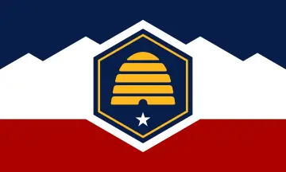

Cameron D. Fay
About Me
My name is Cameron Fay. I was born in utah. I am currently taking classes at byu pathways. I love to play board games,takeing photos, reading and learning new things.

Utah

Utah is a landlocked state in the Mountain West subregion of the Western United States. It is one of the Four Corners states, sharing a border with Arizona, Colorado, and New Mexico. It also borders Wyoming to the northeast, Idaho to the north, and Nevada to the west. In comparison to all the U.S. states and territories, Utah, with a population of just over three million, is the 13th-largest by area, the 30th-most populous, and the 11th-least densely populated. Urban development is mostly concentrated in two regions: the Wasatch Front in the north-central part of the state, which includes the state capital, Salt Lake City, and is home to roughly two-thirds of the population; and Washington County in the southwest, which has approximately 180,000 residents. Most of the western half of Utah lies in the Great Basin.